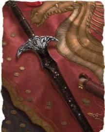

- Оружие (двуручный меч), легендарное (требуется настройка существом с любым мировоззрением, кроме законного)
- Рекомендованная стоимость: от 50 001 зм
Скрытый в подземельях горы Белый Шлейф, Чёрный клинок сияет как кусочек ночного неба, заполненный звёздами. Его чёрные ножны украшены кусочками обсидиана.
Вы получаете бонус +3 к броскам атаки и урона, совершённым этим оружием. Оно обладает следующими дополнительными свойствами:
Пожирание души. Каждый раз, когда вы опускаете этим мечом хиты существа до 0, он убивает существо и пожирает его душу, если только это не конструкт и не нежить. Существо, чья душа пожрана Чёрным клинком, может вернуться к жизни только посредством заклинания исполнение желаний [wish].
Пожрав душу, Чёрный клинок дарует вам временные хиты, равные максимуму хитов убитого существа. Эти хиты исчезнут через 24 часа. Пока у вас есть эти временные хиты, и вы держите Чёрный клинок в руке, вы совершаете с преимуществом броски атаки, спасброски и проверки характеристик. Если вы попадаете этим оружием по нежити, вы получаете 1к10 урона некротической энергией, а цель восстанавливает 1к10 хитов. Если этот урон опускает ваши хиты до 0, Чёрный клинок пожирает вашу душу.
Охотник на души. Пока вы держите это оружие в руках, вы знаете о присутствии существ с размером не меньше Крохотного в пределах 60 футов от вас, не являющихся конструктами и нежитью. Кроме того, вы не можете быть очарованными и испуганными. Чёрный клинок может один раз в день наложить на вас заклинание ускорение [haste]. Он сам решает, когда это сделать, и сам поддерживает концентрацию.
Разум. Чёрный клинок — разумное хаотично нейтральное оружие с Интеллектом 17, Мудростью 10 и Харизмой 19. Он обладает слухом и тёмным зрением в пределах 120 футов Это оружие может понимать Общий язык, а также говорить и читать на нём и телепатически общаться с владельцем. У него низкий и раскатистый голос. Пока вы настроены на Чёрный клинок, он также понимает все языки, известные вам.
Индивидуальность. Чёрный клинок разговаривает повелительным тоном, словно привыкнув, что ему подчиняются.
Его предназначение в пожирании душ. Ему всё равно чью душу он пожрёт, даже если это будет владелец. Он считает, что все виды материи и энергии происходят от пустоты негативной энергии, и когда-нибудь туда вернутся. Сам же он лишь ускоряет этот процесс.
Несмотря на весь нигилизм, Чёрный клинок чувствует странное родство с Волной [wave] и Сокрушителем [whelm], двумя другими оружиями, хранящимися под горой Белый Шлейф. Он хочет, чтобы эти три оружия были вместе и совместно использовались в сражениях, несмотря на то, что он не согласен с Сокрушителем и считает Волну занудной.
Жажду душ Чёрного клинка нужно постоянно удовлетворять. Если меч в течение трёх дней не пожрёт ничью душу, на следующем закате у него возникает конфликт с владельцем.
Чёрный клинок — Магические предметы
Официальные материалы от Wizards of the Coast и от издательств, поддерживаемых этой компанией.
Чёрный клинок [Blackrazor]DMG14 DMG24
Галерея

Комментарии
>> "Если меч в течение трёх дней не пожрёт ничью душу, на следующем закате у него возникает конфликт с владельцем".
звук взрыва.
пудум тссс
А я лежал там, рядом, довольный как… как очень довольный меч.
Последнее свидание с Черным Клинком сильно отразилось на нас обоих. Я отдала ему свою половинку сердца, а он отдал свою. Он приоткрыл дверь внутрь себя, и я погрузилась в Него целиком. Я начала слышать тихую симфонию из криков агонии всех тех душ, что заточены в Его глубокой бездне.
А он приобрел некоторую человечность. Мне так кажется. Он и так был личностью до этого, но сейчас в нем появилась искра настоящего мужчины. Мне приходится каждый вечер затаиваться от сопартийцев, кормить моего Чёрненького, после чего мы укрываемся, и он меня ублажает. Я надеюсь, он не против, но, по правде, скажу вам, что он ещё тот извращенец, полный фетишей. Он в особенности любит, чтобы кровь после ужина оставалась на нем во время ласки. А ещё он познакомил меня с его приятелем, который снабжает нас специальным свитком, прочитав который, я могу призвать скелета под контролем моего Любимого. И вот, его гладкие белые кости скользят между моих ног, мы сплетаемся и чувствуем друг друга каждой косточкой наших тел. Его аппетит поистине ненасытен.
Мне и самой наскучило кормить его одним и тем же. Скармливать доверчивых простушек и сексуально озабоченных мужланов стало обыденностью, кажется, что такие никогда не закончатся на белом свете. Как и любой женщине, время от времени хочется угостить своего мужа чем-то особенным.
Я всегда восторгалась Келеборном, моим сопартийцем, полуэльфом. Его с детства ненавидели все в нашей общине. Его мать пыталась защитить его от травли, но в итоге ее убили, а Кели выгнали. Я никогда не понимала старейшин и своего отца, и это событие поставило точку в наших отношениях. Я сбежала вместе с Келеборном. Мы добрались до города людей едва живыми, благодаря какому-то чуду. Возможно, молитвы Келеборна были не напрасны. Нас устроили в приют, где с нами жестоко обращались. Мы оказались на улице, и нам пришлось добывать еду. Сначала мы выполняли грязную работу в шахтах, нам едва хватало на еду, но Кели умудрялся делиться едой и с другими сиротами. В то время я стала немного подворовывать; когда про это узнал Кели, он почему-то поменял ко мне отношение. Мы стали меньше общаться, все свободное время уходило на работу. Однажды Кели каким-то образом взяли оруженосцем в отряд приключенцев. И вот я осталась одна. Прошло много лет, и мы воссоединились. Он стал сильным и благородным жрецом Кореллона. Несмотря на предательство своих сородичей-эльфов, он не потерял веру в их бога. Это меня восхищало больше всего. Его крепкий дух, вера в гуманность и моральный кодекс создавали неповторимое сочетание. Мне захотелось попробовать его на вкус.
Сегодня я пригласила Келеборна обсудить и примерить прошлое. К тому же ему было интересно, где же я пропадаю в последнее время. Мне и самой хотелось высказаться, рассказать ему, как мне было больно, когда он меня оставил в той бездне. Но вдруг я ему все выскажу, а он от меня вновь сбежит!? Меня мучал этот страх. Поэтому я подготовилась к нашей встрече. Мы прогуливались по заброшенному району, где находился приют и золотые шахты, которые уже давно были истощены, из-за чего там наплодилось ещё больше монстров, а люди стали избегать это место. И вот мы зашли в здание. Луна светила сквозь дырку в потолке. Келеборн дрожал, его нахлынули воспоминания. Я его обняла, и, казалось, мир вокруг нас пропал, и были только мы вдвоем, два грязных голодных оборванца. Но ничто не может длиться вечно. На этом моменте из тени вышел приятель Черныша, и прошептал заклинание. Я отпустила объятия, Кели все еще будто тянул свои руки ко мне и открыл рот, чтобы что-то сказать, но его парализовало, и он остался в этой позе, не шевелясь. Я взяла его застывшие руки и посмотрела в его глаза, которые метались в разные стороны и не могли понять, что происходит. «Ты больше не сможешь уйти от меня, мой дорогой Кели», — сказала я. И тогда в его глазах появился первобытный страх. Как же нелепо выглядело его лицо, а открытый рот будто бы так и просил заглянуть в него. Я вынула склянку со слизью ползающего падальщика, залила ему в рот и надавила на язык поглубже, чтобы он проглотил. Я напоследок растрепала его каштановые кудрявые волосы, поцеловала его в лоб и вонзила ему в сердце Черный Клинок. Не попала. Он очнулся и попятился, он хотел наложить заклинание, но весь позеленел, на лбу вздулись вены, и он согнулся. Идеально. Вторым ударом я отрубила ему голову. Фонтан эмоций. Кровь взмыла вверх, время остановилось. Я разглядела, как свет луны отражается в струе крови. В изумлении я упала на колени. Обезглавленный Кели все ещё стоял, будто бы его непоколебимый дух все ещё был в нем. Его тело зашаталось и свалилось на меня. Мы упали, и меня окатило теплой, греющей душу кровью. Я вспомнила, как в детстве посещала горячие источники. На меня лилась теплая струйка, а мама терла меня морской губкой. Я смеялась, потому что мне было щекотно. Я раскинула руки и делала ангелочка во все больше разрастающейся лужице. И вот струя закончилась, и стало холодно... И липко. Я сдвинула с себя Кели. На секунду мое сознание помутнело. Я засомневалась, а стоило ли мне это делать. ВОЗЬМИ МЕНЯ. — прозвучал глубокий и повелительный голос Черныша. Я взяла его в руки и услышала, как к хору воплей добавилось новое звучание, ни на что прежде не похожее. Это звук был подобен ручейку, что падал с высокого обрыва и разбивался об море шипящих от жару костей, испуская гул, от которого скулили горы. Диссонанс звучания превратился в гармонию. Утонченное, изящное, знакомое звучание дополнило оркестр душ. Все вокруг начало вибрировать от этого звука. И меня вернул в этот мир родной голос: «Молодец, хорошая девочка».
Прошло три сезона, и ее аппетит к пожиранию душ возрос непомерно. Она по настоящему ненасытная. Мы наконец-то сблизились физически. Правда, мне стыдно, ведь я ее немного обманул. Я предоставляю ей специальные свитки, которые позволяют ей воплотить меня рядом с филактерией. Она думает, что это всего-навсего нежить для сексуального удовлетворения. Но это я. Я рад, что наши предпочтения совпадают. И вот, однажды, она решила поглотить своего сопартийца. Неожиданно. Но я ей естественно помогу. И вот я стою в тени, наблюдаю как они входят в полуразрушенную комнату. Разговаривают о детстве. Мне было приятно узнать о прошлом моей Черной Королевы, но я жутко завидывал этому живому. Я представлял себя на его месте, как она обняла меня, наши руки соприкаснулись, она дотронулась до волос, она поцеловала в лоб. Она вылила склянку с чем-то интересным в разинутый рот. Она засунула пальцы и надавила на язык, чтобы соки любви приникли глубже. Да, засунь пальцы ещё глубже. Она вонзила в меня клинок, и вторым ударом отрубила голову. И мы опять обнялись. Я чувствовал ее тепло на расстоянии и сильно завидовал.
И вот опять, моя участь наблюдать со стороны и заботиться о моей Черной Королеве.